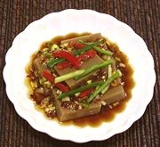

|
Acorn Jelly BanchanKorea - Dotorimuk-muchim | ||||
| Makes: Effort: Sched: DoAhead: |
1-1/3 # ** 40 min Yes |
This is a simplified version of our Acorn Jelly Salad suited for service as one of several Banchan (small side dishes) that accompany a Korean meal. | |||
|
12 ----- 1 2 3 1/2 1/2 1 ----- a/r |
oz --- cl T t T T --- |
Acorn Jelly (1) -- Dressing Garlic Scallions Soy Sauce Sugar Korean Chili Flake (2) Sesame Oil, dark (3) -- Garnish See Step |
Prep - (25 min)
|